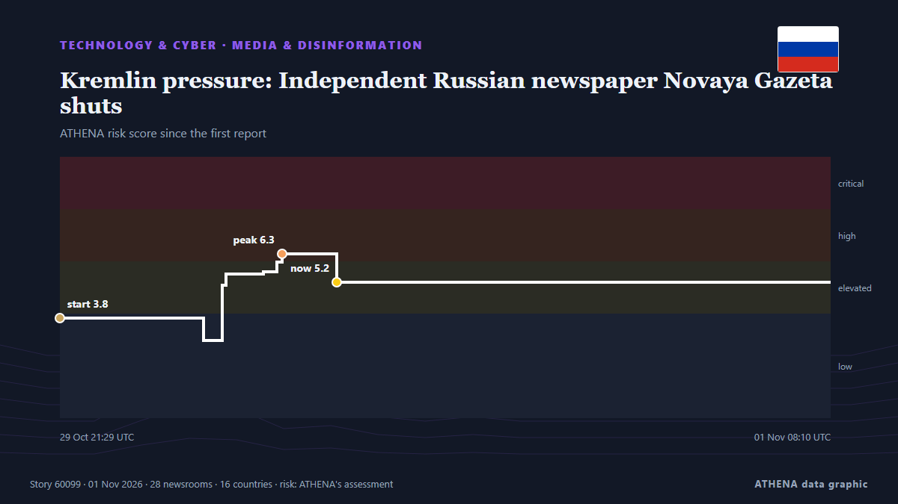

Kremlin pressure: Independent Russian newspaper Novaya Gazeta shuts

Novaya Gazeta will be evicted from its office on Potapovsky Lane in central Moscow, where it has been based for 29 years, the news outlet Ekho reported. de Meduza (English)
Informado de forma independiente por 28 medios de 16 países desde el 29 oct; el primero fue Meduza (English); la cobertura va perdiendo fuerza. ATHENA califica el riesgo como elevado (5.1/10), sobre todo por la gravedad del daño descrito y su alcance geográfico y sectorial. La confianza es del 91 % (alta): lo corroboran 28 medios independientes, con una fiabilidad media de las fuentes del 78 %. Medios por país: Rusia (9), Estados Unidos (4), Francia (3). Cobertura: del 29 oct al 1 nov, 59 horas.
Por qué importa: Los hechos tecnológicos y de ciberseguridad configuran la seguridad, la competencia y las reglas de la vida digital.
Qué ha cambiado: 1 información nueva en las 24 horas hasta el 1 nov.
Primer titular: ‘They killed us’: Novaya Gazeta announces closure after more than 30 years
Los titulares se muestran en inglés, tal como se publicaron.
De un vistazo
Seleccionado, puntuado y redactado por la metodología publicada de ATHENA. Ningún editor interviene en eventos concretos. Cómo se elabora ›
| 29 Oct 21:14 UTC | 1 |
|---|---|
| 30 Oct 00:14 UTC | 0 |
| 30 Oct 03:14 UTC | 0 |
| 30 Oct 06:14 UTC | 6 |
| 30 Oct 09:14 UTC | 11 |
| 30 Oct 12:14 UTC | 10 |
| 30 Oct 15:14 UTC | 3 |
| 30 Oct 18:14 UTC | 4 |
| 30 Oct 21:14 UTC | 1 |
| 31 Oct 00:14 UTC | 0 |
| 31 Oct 03:14 UTC | 1 |
| 31 Oct 06:14 UTC | 0 |
| 31 Oct 09:14 UTC | 0 |
| 31 Oct 12:14 UTC | 0 |
| 31 Oct 15:14 UTC | 0 |
| 31 Oct 18:14 UTC | 0 |
| 31 Oct 21:14 UTC | 0 |
| 01 Nov 00:14 UTC | 0 |
| 01 Nov 03:14 UTC | 0 |
| 01 Nov 06:14 UTC | 1 |
| 29 Oct 21:29 UTC | 3.8 |
|---|---|
| 30 Oct 08:24 UTC | 3.0 |
| 30 Oct 09:51 UTC | 5.1 |
| 30 Oct 10:08 UTC | 5.5 |
| 30 Oct 12:59 UTC | 5.6 |
| 30 Oct 14:00 UTC | 6.0 |
| 30 Oct 14:25 UTC | 6.3 |
| 30 Oct 18:33 UTC | 5.2 |
| 01 Nov 08:10 UTC | 5.1 |
Por qué estas cifras
Importancia
Riesgo
Confianza
La cobertura: quién informó y cuándo
titular tal como se publicó · abre el original- Meduza (English) · RusiaThe portraits of dead friends are coming off the walls. After 29 years, Russia’s independent Novaya Gazeta newspaper is being forced out of its Moscow newsroom.
- APA (English) · AzerbaiyánNovaya Gazeta editorial board announces newspaper's closure in Russia
- The Daily Star — page reader · BangladésIndependent Russian newspaper Novaya Gazeta announces closure
- France 24 English · FranciaRussia's bastion of free press Novaya Gazeta shuts down under Kremlin pressure
- The Guardian · Reino UnidoRussian society being ‘systematically crushed’ says Novaya Gazeta as newspaper announces closure
- Free Malaysia Today · MalasiaIndependent Russian newspaper Novaya Gazeta announces its closure
- Novaya Gazeta Europe (EN) · Rusia‘They killed us’: Novaya Gazeta announces closure after more than 30 years
- eNCA · SudáfricaIndependent Russian newspaper Novaya Gazeta shuts under Kremlin pressure
- The Straits Times · SingapurRussian independent newspaper Novaya Gazeta forced to close its doors
- The Moscow Times · RusiaRussia’s Oldest Independent Newspaper, Novaya Gazeta, Announces Closure
- Meduza (English) · Rusia‘They killed us’: Russian independent newspaper Novaya Gazeta announces its closure after decades of repression
- RFE/RL (English) · INT'They Killed Us': Muckraking Russian Newspaper Novaya Gazeta Announces Closure
- Kyiv Post · UcraniaIndependent Russian Newspaper Novaya Gazeta Shuts Under Kremlin Pressure
- Novinite · BulgariaNovaya Gazeta, Symbol of Independent Russian Journalism, Forced to Close
- Al Jazeera English · CatarRussia ‘forces’ closure of investigative newspaper Novaya Gazeta
- DW English · AlemaniaRussia: Critical newspaper 'Novaya Gazeta' to close
- Ukrainska Pravda (English) · Ucrania"We've been killed by secret services": Independent Russian newspaper Novaya Gazeta to close after 30 years
- BBC News · Reino UnidoThey strangled us, says founder of Russian newspaper shut under pressure from authorities
- Meduza (English) · RusiaA statement from from Meduza’s editorial team and fellow journalists in support of Novaya Gazeta
- AzerNews · AzerbaiyánRussia's Novaya Gazeta announces closure after 33 years, citing state pressure
- Kyiv Independent · Ucrania'They killed us' – Pressure from Russian authorities forces closure of Novaya Gazeta
- Rappler · FilipinasRussian independent paper Novaya Gazeta finally forced to close its doors
- Human Rights Watch · Estados Unidos“They Killed Us”
- Meduza (English) · Rusia‘A big bright lighthouse has been swept away by a murky wave’: Russian journalists, writers, and public figures react to Novaya Gazeta’s closure
- The New York Times (World) · Estados UnidosRussian News Outlet That Defied Kremlin Will Shut Down: ‘They Killed Us’
- ABC News (International) · Estados UnidosRussia's top independent newspaper shuts down, blaming pressure from authorities
- Amnesty International · Reino UnidoRussia: Closure of Novaya Gazeta is a devastating loss for embattled media freedom
- Euronews English · FranciaRussian independent newspaper Novaya Gazeta says it will shut down following pressure from Kremlin
- CBS News (World) · Estados UnidosLast independent newspaper in Russia forced to shut down
- Meduza (English) · RusiaReaders gather outside Novaya Gazeta’s Moscow office after independent Russian newspaper announces closure
- France 24 English · FranciaRussia’s Novaya Gazeta to cease publication amid Kremlin crackdown
- NDTV · IndiaIndependent Russian Newspaper Shuts Down Amid Kremlin Pressure
- Meduza (English) · RusiaAs Novaya Gazeta, one of Russia’s best-known independent newspapers, is forced to close after 33 years, three former staffers look back on its legacy
- Meduza (English) · RusiaCan Russia’s independent newspaper Novaya Gazeta rise from the ashes a third time? Editor Sergey Sokolov discusses what comes next.
- The Daily Star — page reader · BangladésKremlin pressure: Independent Russian newspaper Novaya Gazeta shuts
- The Straits Times · SingapurIndependent Russian newspaper Novaya Gazeta shuts under Kremlin pressure
- Al Jazeera English · CatarRussia’s Novaya Gazeta ‘killed off’ after murders, arrests and pressure
- Türkiye Today · TurquíaNovaya Gazeta closes, says it was ‘killed’ by Russian state